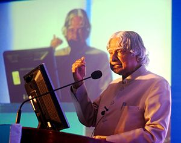

A. P. J. Abdul Kalam
Great Indian scientist and politician who played a leading role in the development of India's missile and nuclear weapons programs
About the Legend
- Avul Pakir Jainulabdeen Abdul Kalam BR was an Indian aerospace scientist and statesman who served as the 11th president of India from 2002 to 2007.
- He thus came to be known as the Missile Man of India for his work on the development of ballistic missile and launch vehicle technology.
- While delivering a lecture at the Indian Institute of Management Shillong, Kalam collapsed and died from an apparent cardiac arrest on 27 July 2015, aged 83.
- Avul Pakir Jainulabdeen Abdul Kalam was born on 15 October 1931, to a Tamil Muslim family in the pilgrimage centre of Rameswaram on Pamban Island, then in the Madras Presidency and now in the State of Tamil Nadu.
- Kalam was the youngest of four brothers and one sister in his family.
- As a young boy he had to sell newspapers to add to the family's meager income.
- After completing his education at Schwartz Higher Secondary School, Ramanathapuram, Kalam went on to attend the St. Joseph's College, Tiruchirappalli from where he graduated in Physics in 1954.
- In 1963 to 1964, he visited NASA's Langley Research Center in Hampton, Virginia; Goddard Space Flight Center in Greenbelt, Maryland; and Wallops Flight Facility.